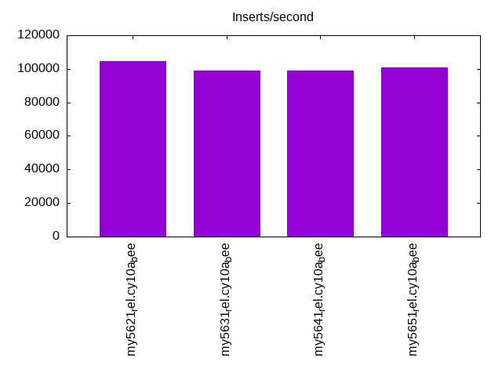
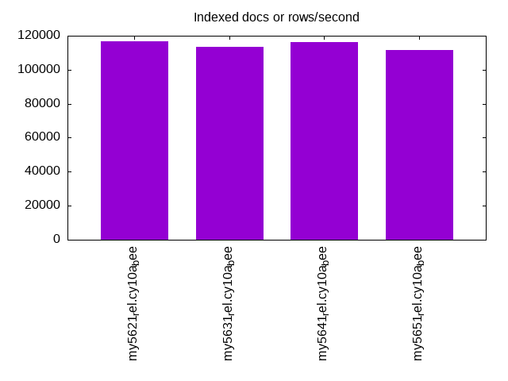
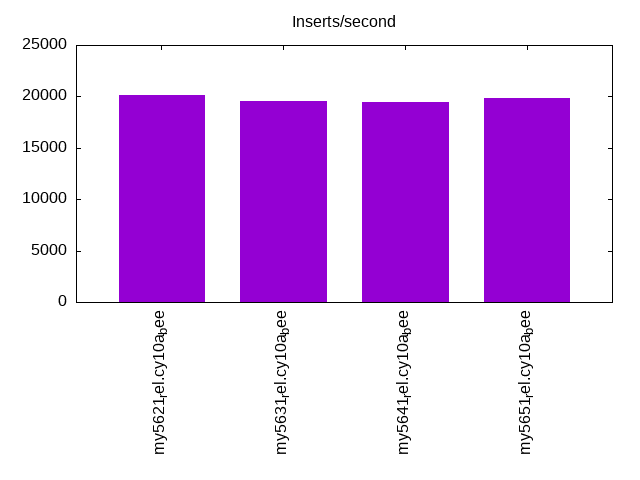
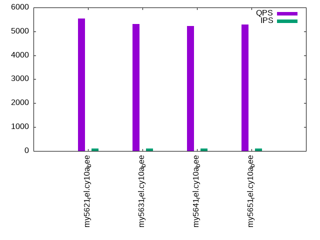
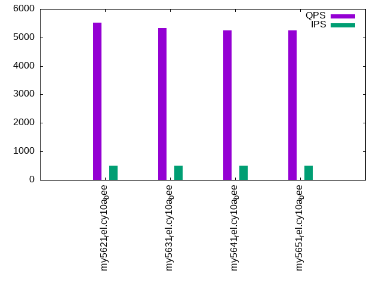
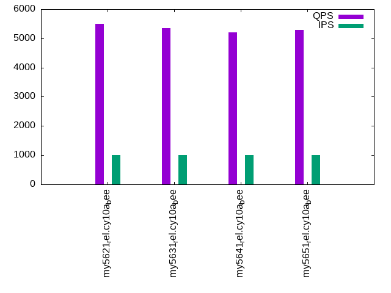

This is a report for the insert benchmark with 20M docs and 1 client(s). It is generated by scripts (bash, awk, sed) and Tufte might not be impressed. An overview of the insert benchmark is here and a short update is here. Below, by DBMS, I mean DBMS+version.config. An example is my8020.c10b40 where my means MySQL, 8020 is version 8.0.20 and c10b40 is the name for the configuration file.
The test server has 8 AMD cores, 16G RAM and an NVMe SSD. It is described here as the Beelink. The benchmark was run with 1 client and there were 1 or 3 connections per client (1 for queries or inserts without rate limits, 1+1 for rate limited inserts+deletes). There is 1 table. It loads 20M rows without secondary indexes, creates secondary indexes, then inserts 50M rows with a delete per insert to avoid growing the table. It then does 3 read+write tests for 1200s each that do queries as fast as possible with 100, 500 and then 1000 inserts/second/client concurrent with the queries and 1000 deletes/second to avoid growing the table. The database is (or should be) cached by InnoDB.
The tested DBMS are:
The numbers are inserts/s for l.i0 and l.i1, indexed docs (or rows) /s for l.x and queries/s for q100, q500, q1000. The values are the average rate over the entire test for inserts (IPS) and queries (QPS). The range of values for IPS and QPS is split into 3 parts: bottom 25%, middle 50%, top 25%. Values in the bottom 25% have a red background, values in the top 25% have a green background and values in the middle have no color. A gray background is used for values that can be ignored because the DBMS did not sustain the target insert rate. Red backgrounds are not used when the minimum value is within 80% of the max value.
| dbms | l.i0 | l.x | l.i1 | q100.1 | q500.1 | q1000.1 |
|---|---|---|---|---|---|---|
| my5621_rel.cy10a_bee | 104712 | 116860 | 20137 | 5533 | 5519 | 5505 |
| my5631_rel.cy10a_bee | 99010 | 113559 | 19577 | 5305 | 5332 | 5346 |
| my5641_rel.cy10a_bee | 99010 | 116185 | 19448 | 5223 | 5244 | 5210 |
| my5651_rel.cy10a_bee | 101010 | 111667 | 19881 | 5296 | 5245 | 5285 |
This table has relative throughput, throughput for the DBMS relative to the DBMS in the first line, using the absolute throughput from the previous table. Values less than 0.95 have a yellow background. Values greater than 1.05 have a blue background.
| dbms | l.i0 | l.x | l.i1 | q100.1 | q500.1 | q1000.1 |
|---|---|---|---|---|---|---|
| my5621_rel.cy10a_bee | 1.00 | 1.00 | 1.00 | 1.00 | 1.00 | 1.00 |
| my5631_rel.cy10a_bee | 0.95 | 0.97 | 0.97 | 0.96 | 0.97 | 0.97 |
| my5641_rel.cy10a_bee | 0.95 | 0.99 | 0.97 | 0.94 | 0.95 | 0.95 |
| my5651_rel.cy10a_bee | 0.96 | 0.96 | 0.99 | 0.96 | 0.95 | 0.96 |
This lists the average rate of inserts/s for the tests that do inserts concurrent with queries. For such tests the query rate is listed in the table above. The read+write tests are setup so that the insert rate should match the target rate every second. Cells that are not at least 95% of the target have a red background to indicate a failure to satisfy the target.
| dbms | q100.1 | q500.1 | q1000.1 |
|---|---|---|---|
| my5621_rel.cy10a_bee | 100 | 499 | 997 |
| my5631_rel.cy10a_bee | 100 | 498 | 998 |
| my5641_rel.cy10a_bee | 100 | 498 | 997 |
| my5651_rel.cy10a_bee | 100 | 498 | 997 |
| target | 100 | 500 | 1000 |
l.i0: load without secondary indexes. Graphs for performance per 1-second interval are here.
Average throughput:
Insert response time histogram: each cell has the percentage of responses that take <= the time in the header and max is the max response time in seconds. For the max column values in the top 25% of the range have a red background and in the bottom 25% of the range have a green background. The red background is not used when the min value is within 80% of the max value.
| dbms | 256us | 1ms | 4ms | 16ms | 64ms | 256ms | 1s | 4s | 16s | gt | max |
|---|---|---|---|---|---|---|---|---|---|---|---|
| my5621_rel.cy10a_bee | 95.609 | 4.290 | 0.097 | 0.003 | 0.100 | ||||||
| my5631_rel.cy10a_bee | 90.429 | 9.434 | 0.131 | 0.002 | 0.003 | 0.099 | |||||
| my5641_rel.cy10a_bee | 90.340 | 9.554 | 0.103 | 0.001 | 0.003 | 0.105 | |||||
| my5651_rel.cy10a_bee | 93.077 | 6.814 | 0.103 | 0.002 | 0.003 | 0.100 |
Performance metrics for the DBMS listed above. Some are normalized by throughput, others are not. Legend for results is here.
ips qps rps rmbps wps wmbps rpq rkbpq wpi wkbpi csps cpups cspq cpupq dbgb1 dbgb2 rss maxop p50 p99 tag 104712 0 921 3.6 55.0 23.9 0.009 0.035 0.001 0.234 11974 22.3 0.114 17 1.3 41.8 1.9 0.100 105919 90695 20m.my5621_rel.cy10a_bee 99010 0 873 3.4 52.4 22.7 0.009 0.035 0.001 0.234 11409 21.8 0.115 18 1.3 41.8 1.9 0.099 100089 87679 20m.my5631_rel.cy10a_bee 99010 0 869 3.4 52.6 22.6 0.009 0.035 0.001 0.234 11359 21.6 0.115 17 1.3 41.8 1.9 0.105 99781 86104 20m.my5641_rel.cy10a_bee 101010 0 884 3.5 53.0 23.0 0.009 0.035 0.001 0.233 11523 21.8 0.114 17 1.3 41.8 1.9 0.100 101591 88504 20m.my5651_rel.cy10a_bee
l.x: create secondary indexes.
Average throughput:
Performance metrics for the DBMS listed above. Some are normalized by throughput, others are not. Legend for results is here.
ips qps rps rmbps wps wmbps rpq rkbpq wpi wkbpi csps cpups cspq cpupq dbgb1 dbgb2 rss maxop p50 p99 tag 116860 0 17 0.1 1308.4 121.0 0.000 0.001 0.011 1.061 3863 11.8 0.033 8 2.7 43.2 3.1 0.010 NA NA 20m.my5621_rel.cy10a_bee 113559 0 16 0.1 1263.7 117.4 0.000 0.001 0.011 1.059 3903 12.0 0.034 8 2.7 43.2 2.9 0.016 NA NA 20m.my5631_rel.cy10a_bee 116185 0 17 0.1 1292.9 120.1 0.000 0.001 0.011 1.059 3958 11.8 0.034 8 2.7 43.2 3.0 0.008 NA NA 20m.my5641_rel.cy10a_bee 111667 0 22 0.1 1307.8 117.5 0.000 0.001 0.012 1.078 3879 11.4 0.035 8 2.7 43.2 3.0 0.009 NA NA 20m.my5651_rel.cy10a_bee
l.i1: continue load after secondary indexes created. Graphs for performance per 1-second interval are here.
Average throughput:
Insert response time histogram: each cell has the percentage of responses that take <= the time in the header and max is the max response time in seconds. For the max column values in the top 25% of the range have a red background and in the bottom 25% of the range have a green background. The red background is not used when the min value is within 80% of the max value.
| dbms | 256us | 1ms | 4ms | 16ms | 64ms | 256ms | 1s | 4s | 16s | gt | max |
|---|---|---|---|---|---|---|---|---|---|---|---|
| my5621_rel.cy10a_bee | 96.483 | 3.355 | 0.159 | 0.003 | 0.101 | ||||||
| my5631_rel.cy10a_bee | 96.271 | 3.565 | 0.162 | 0.002 | 0.109 | ||||||
| my5641_rel.cy10a_bee | 96.180 | 3.656 | 0.161 | 0.002 | 0.099 | ||||||
| my5651_rel.cy10a_bee | 96.381 | 3.458 | 0.160 | 0.002 | 0.100 |
Delete response time histogram: each cell has the percentage of responses that take <= the time in the header and max is the max response time in seconds. For the max column values in the top 25% of the range have a red background and in the bottom 25% of the range have a green background. The red background is not used when the min value is within 80% of the max value.
| dbms | 256us | 1ms | 4ms | 16ms | 64ms | 256ms | 1s | 4s | 16s | gt | max |
|---|---|---|---|---|---|---|---|---|---|---|---|
| my5621_rel.cy10a_bee | 97.378 | 2.499 | 0.120 | 0.003 | 0.083 | ||||||
| my5631_rel.cy10a_bee | 97.279 | 2.607 | 0.113 | 0.002 | 0.087 | ||||||
| my5641_rel.cy10a_bee | 97.287 | 2.596 | 0.116 | 0.002 | 0.078 | ||||||
| my5651_rel.cy10a_bee | 97.456 | 2.426 | 0.117 | 0.001 | 0.078 |
Performance metrics for the DBMS listed above. Some are normalized by throughput, others are not. Legend for results is here.
ips qps rps rmbps wps wmbps rpq rkbpq wpi wkbpi csps cpups cspq cpupq dbgb1 dbgb2 rss maxop p50 p99 tag 20137 0 680 2.7 992.5 55.3 0.034 0.135 0.049 2.812 14242 34.6 0.707 137 3.8 44.3 4.5 0.101 21486 5094 20m.my5621_rel.cy10a_bee 19577 0 657 2.6 957.3 53.6 0.034 0.134 0.049 2.802 13962 34.3 0.713 140 3.8 44.3 4.5 0.109 20934 4945 20m.my5631_rel.cy10a_bee 19448 0 650 2.5 964.1 53.6 0.033 0.134 0.050 2.824 13981 34.1 0.719 140 3.8 44.3 4.5 0.099 20787 4595 20m.my5641_rel.cy10a_bee 19881 0 667 2.6 972.7 54.4 0.034 0.134 0.049 2.803 14194 34.4 0.714 138 3.8 44.3 4.5 0.100 21227 4795 20m.my5651_rel.cy10a_bee
q100.1: range queries with 100 insert/s per client. Graphs for performance per 1-second interval are here.
Average throughput:
Query response time histogram: each cell has the percentage of responses that take <= the time in the header and max is the max response time in seconds. For max values in the top 25% of the range have a red background and in the bottom 25% of the range have a green background. The red background is not used when the min value is within 80% of the max value.
| dbms | 256us | 1ms | 4ms | 16ms | 64ms | 256ms | 1s | 4s | 16s | gt | max |
|---|---|---|---|---|---|---|---|---|---|---|---|
| my5621_rel.cy10a_bee | 95.789 | 4.206 | 0.002 | 0.003 | 0.015 | ||||||
| my5631_rel.cy10a_bee | 95.169 | 4.826 | 0.002 | 0.003 | 0.016 | ||||||
| my5641_rel.cy10a_bee | 94.580 | 5.415 | 0.002 | 0.003 | nonzero | 0.017 | |||||
| my5651_rel.cy10a_bee | 94.855 | 5.139 | 0.003 | 0.003 | nonzero | 0.016 |
Insert response time histogram: each cell has the percentage of responses that take <= the time in the header and max is the max response time in seconds. For max values in the top 25% of the range have a red background and in the bottom 25% of the range have a green background. The red background is not used when the min value is within 80% of the max value.
| dbms | 256us | 1ms | 4ms | 16ms | 64ms | 256ms | 1s | 4s | 16s | gt | max |
|---|---|---|---|---|---|---|---|---|---|---|---|
| my5621_rel.cy10a_bee | 50.500 | 48.417 | 1.083 | 0.025 | |||||||
| my5631_rel.cy10a_bee | 51.000 | 47.500 | 1.500 | 0.025 | |||||||
| my5641_rel.cy10a_bee | 49.583 | 49.125 | 1.292 | 0.033 | |||||||
| my5651_rel.cy10a_bee | 54.917 | 44.250 | 0.833 | 0.026 |
Delete response time histogram: each cell has the percentage of responses that take <= the time in the header and max is the max response time in seconds. For max values in the top 25% of the range have a red background and in the bottom 25% of the range have a green background. The red background is not used when the min value is within 80% of the max value.
| dbms | 256us | 1ms | 4ms | 16ms | 64ms | 256ms | 1s | 4s | 16s | gt | max |
|---|---|---|---|---|---|---|---|---|---|---|---|
| my5621_rel.cy10a_bee | 51.958 | 47.833 | 0.208 | 0.018 | |||||||
| my5631_rel.cy10a_bee | 52.542 | 46.458 | 1.000 | 0.030 | |||||||
| my5641_rel.cy10a_bee | 52.375 | 46.917 | 0.708 | 0.024 | |||||||
| my5651_rel.cy10a_bee | 58.083 | 41.375 | 0.542 | 0.027 |
Performance metrics for the DBMS listed above. Some are normalized by throughput, others are not. Legend for results is here.
ips qps rps rmbps wps wmbps rpq rkbpq wpi wkbpi csps cpups cspq cpupq dbgb1 dbgb2 rss maxop p50 p99 tag 100 5533 4 0.0 716.9 21.5 0.001 0.003 7.183 220.870 23647 13.1 4.274 189 3.8 44.3 4.5 0.015 5482 5308 20m.my5621_rel.cy10a_bee 100 5305 4 0.0 745.9 22.4 0.001 0.003 7.481 230.100 22857 13.2 4.309 199 3.8 44.3 4.5 0.016 5275 5115 20m.my5631_rel.cy10a_bee 100 5223 4 0.0 744.0 22.3 0.001 0.003 7.477 229.929 22602 13.0 4.327 199 3.8 44.3 4.5 0.017 5194 5002 20m.my5641_rel.cy10a_bee 100 5296 4 0.0 696.0 20.9 0.001 0.003 6.988 215.051 22863 13.3 4.317 201 3.8 44.3 4.5 0.016 5258 5051 20m.my5651_rel.cy10a_bee
q500.1: range queries with 500 insert/s per client. Graphs for performance per 1-second interval are here.
Average throughput:
Query response time histogram: each cell has the percentage of responses that take <= the time in the header and max is the max response time in seconds. For max values in the top 25% of the range have a red background and in the bottom 25% of the range have a green background. The red background is not used when the min value is within 80% of the max value.
| dbms | 256us | 1ms | 4ms | 16ms | 64ms | 256ms | 1s | 4s | 16s | gt | max |
|---|---|---|---|---|---|---|---|---|---|---|---|
| my5621_rel.cy10a_bee | 95.715 | 4.280 | 0.003 | 0.002 | 0.016 | ||||||
| my5631_rel.cy10a_bee | 95.008 | 4.987 | 0.002 | 0.003 | 0.016 | ||||||
| my5641_rel.cy10a_bee | 94.601 | 5.394 | 0.002 | 0.002 | 0.010 | ||||||
| my5651_rel.cy10a_bee | 94.373 | 5.622 | 0.003 | 0.003 | nonzero | 0.016 |
Insert response time histogram: each cell has the percentage of responses that take <= the time in the header and max is the max response time in seconds. For max values in the top 25% of the range have a red background and in the bottom 25% of the range have a green background. The red background is not used when the min value is within 80% of the max value.
| dbms | 256us | 1ms | 4ms | 16ms | 64ms | 256ms | 1s | 4s | 16s | gt | max |
|---|---|---|---|---|---|---|---|---|---|---|---|
| my5621_rel.cy10a_bee | 87.642 | 12.200 | 0.158 | 0.023 | |||||||
| my5631_rel.cy10a_bee | 89.542 | 10.325 | 0.133 | 0.022 | |||||||
| my5641_rel.cy10a_bee | 89.333 | 10.583 | 0.083 | 0.019 | |||||||
| my5651_rel.cy10a_bee | 89.375 | 10.500 | 0.125 | 0.019 |
Delete response time histogram: each cell has the percentage of responses that take <= the time in the header and max is the max response time in seconds. For max values in the top 25% of the range have a red background and in the bottom 25% of the range have a green background. The red background is not used when the min value is within 80% of the max value.
| dbms | 256us | 1ms | 4ms | 16ms | 64ms | 256ms | 1s | 4s | 16s | gt | max |
|---|---|---|---|---|---|---|---|---|---|---|---|
| my5621_rel.cy10a_bee | 89.933 | 9.958 | 0.108 | 0.024 | |||||||
| my5631_rel.cy10a_bee | 90.167 | 9.767 | 0.067 | 0.020 | |||||||
| my5641_rel.cy10a_bee | 90.875 | 9.092 | 0.033 | 0.017 | |||||||
| my5651_rel.cy10a_bee | 90.300 | 9.642 | 0.058 | 0.029 |
Performance metrics for the DBMS listed above. Some are normalized by throughput, others are not. Legend for results is here.
ips qps rps rmbps wps wmbps rpq rkbpq wpi wkbpi csps cpups cspq cpupq dbgb1 dbgb2 rss maxop p50 p99 tag 499 5519 16 0.1 1028.5 31.4 0.003 0.012 2.062 64.420 24792 13.7 4.492 199 3.8 44.3 4.5 0.016 5471 5305 20m.my5621_rel.cy10a_bee 498 5332 17 0.1 276.8 8.8 0.003 0.012 0.555 18.021 21637 13.5 4.058 203 3.8 44.3 4.5 0.016 5290 5114 20m.my5631_rel.cy10a_bee 498 5244 16 0.1 389.8 12.2 0.003 0.013 0.782 25.036 21675 13.5 4.133 206 3.8 44.3 4.5 0.010 5210 5034 20m.my5641_rel.cy10a_bee 498 5245 16 0.1 348.8 11.0 0.003 0.013 0.701 22.549 21719 13.6 4.141 207 3.8 44.3 4.5 0.016 5227 5018 20m.my5651_rel.cy10a_bee
q1000.1: range queries with 1000 insert/s per client. Graphs for performance per 1-second interval are here.
Average throughput:
Query response time histogram: each cell has the percentage of responses that take <= the time in the header and max is the max response time in seconds. For max values in the top 25% of the range have a red background and in the bottom 25% of the range have a green background. The red background is not used when the min value is within 80% of the max value.
| dbms | 256us | 1ms | 4ms | 16ms | 64ms | 256ms | 1s | 4s | 16s | gt | max |
|---|---|---|---|---|---|---|---|---|---|---|---|
| my5621_rel.cy10a_bee | 95.561 | 4.431 | 0.005 | 0.002 | nonzero | 0.020 | |||||
| my5631_rel.cy10a_bee | 95.090 | 4.905 | 0.002 | 0.003 | 0.011 | ||||||
| my5641_rel.cy10a_bee | 94.280 | 5.715 | 0.002 | 0.003 | 0.010 | ||||||
| my5651_rel.cy10a_bee | 94.666 | 5.328 | 0.002 | 0.003 | 0.010 |
Insert response time histogram: each cell has the percentage of responses that take <= the time in the header and max is the max response time in seconds. For max values in the top 25% of the range have a red background and in the bottom 25% of the range have a green background. The red background is not used when the min value is within 80% of the max value.
| dbms | 256us | 1ms | 4ms | 16ms | 64ms | 256ms | 1s | 4s | 16s | gt | max |
|---|---|---|---|---|---|---|---|---|---|---|---|
| my5621_rel.cy10a_bee | 90.754 | 9.142 | 0.104 | 0.026 | |||||||
| my5631_rel.cy10a_bee | 94.758 | 5.183 | 0.058 | 0.023 | |||||||
| my5641_rel.cy10a_bee | 94.696 | 5.267 | 0.037 | 0.018 | |||||||
| my5651_rel.cy10a_bee | 94.871 | 5.079 | 0.050 | 0.018 |
Delete response time histogram: each cell has the percentage of responses that take <= the time in the header and max is the max response time in seconds. For max values in the top 25% of the range have a red background and in the bottom 25% of the range have a green background. The red background is not used when the min value is within 80% of the max value.
| dbms | 256us | 1ms | 4ms | 16ms | 64ms | 256ms | 1s | 4s | 16s | gt | max |
|---|---|---|---|---|---|---|---|---|---|---|---|
| my5621_rel.cy10a_bee | 92.050 | 7.888 | 0.062 | 0.025 | |||||||
| my5631_rel.cy10a_bee | 94.946 | 5.050 | 0.004 | 0.017 | |||||||
| my5641_rel.cy10a_bee | 94.975 | 5.004 | 0.021 | 0.022 | |||||||
| my5651_rel.cy10a_bee | 95.029 | 4.967 | 0.004 | 0.016 |
Performance metrics for the DBMS listed above. Some are normalized by throughput, others are not. Legend for results is here.
ips qps rps rmbps wps wmbps rpq rkbpq wpi wkbpi csps cpups cspq cpupq dbgb1 dbgb2 rss maxop p50 p99 tag 997 5505 33 0.1 1169.5 36.1 0.006 0.024 1.173 37.095 25390 14.8 4.612 215 3.8 44.3 4.5 0.020 5466 5273 20m.my5621_rel.cy10a_bee 998 5346 33 0.1 3.7 1.1 0.006 0.024 0.004 1.087 21017 14.5 3.931 217 3.8 44.3 4.5 0.011 5306 5129 20m.my5631_rel.cy10a_bee 997 5210 33 0.1 3.7 1.1 0.006 0.025 0.004 1.091 20511 14.5 3.937 223 3.8 44.3 4.5 0.010 5178 4986 20m.my5641_rel.cy10a_bee 997 5285 33 0.1 3.7 1.1 0.006 0.025 0.004 1.088 20967 14.6 3.967 221 3.8 44.3 4.5 0.010 5243 5052 20m.my5651_rel.cy10a_bee
l.i0: load without secondary indexes
Performance metrics for all DBMS, not just the ones listed above. Some are normalized by throughput, others are not. Legend for results is here.
ips qps rps rmbps wps wmbps rpq rkbpq wpi wkbpi csps cpups cspq cpupq dbgb1 dbgb2 rss maxop p50 p99 tag 104712 0 921 3.6 55.0 23.9 0.009 0.035 0.001 0.234 11974 22.3 0.114 17 1.3 41.8 1.9 0.100 105919 90695 20m.my5621_rel.cy10a_bee 99010 0 873 3.4 52.4 22.7 0.009 0.035 0.001 0.234 11409 21.8 0.115 18 1.3 41.8 1.9 0.099 100089 87679 20m.my5631_rel.cy10a_bee 99010 0 869 3.4 52.6 22.6 0.009 0.035 0.001 0.234 11359 21.6 0.115 17 1.3 41.8 1.9 0.105 99781 86104 20m.my5641_rel.cy10a_bee 101010 0 884 3.5 53.0 23.0 0.009 0.035 0.001 0.233 11523 21.8 0.114 17 1.3 41.8 1.9 0.100 101591 88504 20m.my5651_rel.cy10a_bee
l.x: create secondary indexes
Performance metrics for all DBMS, not just the ones listed above. Some are normalized by throughput, others are not. Legend for results is here.
ips qps rps rmbps wps wmbps rpq rkbpq wpi wkbpi csps cpups cspq cpupq dbgb1 dbgb2 rss maxop p50 p99 tag 116860 0 17 0.1 1308.4 121.0 0.000 0.001 0.011 1.061 3863 11.8 0.033 8 2.7 43.2 3.1 0.010 NA NA 20m.my5621_rel.cy10a_bee 113559 0 16 0.1 1263.7 117.4 0.000 0.001 0.011 1.059 3903 12.0 0.034 8 2.7 43.2 2.9 0.016 NA NA 20m.my5631_rel.cy10a_bee 116185 0 17 0.1 1292.9 120.1 0.000 0.001 0.011 1.059 3958 11.8 0.034 8 2.7 43.2 3.0 0.008 NA NA 20m.my5641_rel.cy10a_bee 111667 0 22 0.1 1307.8 117.5 0.000 0.001 0.012 1.078 3879 11.4 0.035 8 2.7 43.2 3.0 0.009 NA NA 20m.my5651_rel.cy10a_bee
l.i1: continue load after secondary indexes created
Performance metrics for all DBMS, not just the ones listed above. Some are normalized by throughput, others are not. Legend for results is here.
ips qps rps rmbps wps wmbps rpq rkbpq wpi wkbpi csps cpups cspq cpupq dbgb1 dbgb2 rss maxop p50 p99 tag 20137 0 680 2.7 992.5 55.3 0.034 0.135 0.049 2.812 14242 34.6 0.707 137 3.8 44.3 4.5 0.101 21486 5094 20m.my5621_rel.cy10a_bee 19577 0 657 2.6 957.3 53.6 0.034 0.134 0.049 2.802 13962 34.3 0.713 140 3.8 44.3 4.5 0.109 20934 4945 20m.my5631_rel.cy10a_bee 19448 0 650 2.5 964.1 53.6 0.033 0.134 0.050 2.824 13981 34.1 0.719 140 3.8 44.3 4.5 0.099 20787 4595 20m.my5641_rel.cy10a_bee 19881 0 667 2.6 972.7 54.4 0.034 0.134 0.049 2.803 14194 34.4 0.714 138 3.8 44.3 4.5 0.100 21227 4795 20m.my5651_rel.cy10a_bee
q100.1: range queries with 100 insert/s per client
Performance metrics for all DBMS, not just the ones listed above. Some are normalized by throughput, others are not. Legend for results is here.
ips qps rps rmbps wps wmbps rpq rkbpq wpi wkbpi csps cpups cspq cpupq dbgb1 dbgb2 rss maxop p50 p99 tag 100 5533 4 0.0 716.9 21.5 0.001 0.003 7.183 220.870 23647 13.1 4.274 189 3.8 44.3 4.5 0.015 5482 5308 20m.my5621_rel.cy10a_bee 100 5305 4 0.0 745.9 22.4 0.001 0.003 7.481 230.100 22857 13.2 4.309 199 3.8 44.3 4.5 0.016 5275 5115 20m.my5631_rel.cy10a_bee 100 5223 4 0.0 744.0 22.3 0.001 0.003 7.477 229.929 22602 13.0 4.327 199 3.8 44.3 4.5 0.017 5194 5002 20m.my5641_rel.cy10a_bee 100 5296 4 0.0 696.0 20.9 0.001 0.003 6.988 215.051 22863 13.3 4.317 201 3.8 44.3 4.5 0.016 5258 5051 20m.my5651_rel.cy10a_bee
q500.1: range queries with 500 insert/s per client
Performance metrics for all DBMS, not just the ones listed above. Some are normalized by throughput, others are not. Legend for results is here.
ips qps rps rmbps wps wmbps rpq rkbpq wpi wkbpi csps cpups cspq cpupq dbgb1 dbgb2 rss maxop p50 p99 tag 499 5519 16 0.1 1028.5 31.4 0.003 0.012 2.062 64.420 24792 13.7 4.492 199 3.8 44.3 4.5 0.016 5471 5305 20m.my5621_rel.cy10a_bee 498 5332 17 0.1 276.8 8.8 0.003 0.012 0.555 18.021 21637 13.5 4.058 203 3.8 44.3 4.5 0.016 5290 5114 20m.my5631_rel.cy10a_bee 498 5244 16 0.1 389.8 12.2 0.003 0.013 0.782 25.036 21675 13.5 4.133 206 3.8 44.3 4.5 0.010 5210 5034 20m.my5641_rel.cy10a_bee 498 5245 16 0.1 348.8 11.0 0.003 0.013 0.701 22.549 21719 13.6 4.141 207 3.8 44.3 4.5 0.016 5227 5018 20m.my5651_rel.cy10a_bee
q1000.1: range queries with 1000 insert/s per client
Performance metrics for all DBMS, not just the ones listed above. Some are normalized by throughput, others are not. Legend for results is here.
ips qps rps rmbps wps wmbps rpq rkbpq wpi wkbpi csps cpups cspq cpupq dbgb1 dbgb2 rss maxop p50 p99 tag 997 5505 33 0.1 1169.5 36.1 0.006 0.024 1.173 37.095 25390 14.8 4.612 215 3.8 44.3 4.5 0.020 5466 5273 20m.my5621_rel.cy10a_bee 998 5346 33 0.1 3.7 1.1 0.006 0.024 0.004 1.087 21017 14.5 3.931 217 3.8 44.3 4.5 0.011 5306 5129 20m.my5631_rel.cy10a_bee 997 5210 33 0.1 3.7 1.1 0.006 0.025 0.004 1.091 20511 14.5 3.937 223 3.8 44.3 4.5 0.010 5178 4986 20m.my5641_rel.cy10a_bee 997 5285 33 0.1 3.7 1.1 0.006 0.025 0.004 1.088 20967 14.6 3.967 221 3.8 44.3 4.5 0.010 5243 5052 20m.my5651_rel.cy10a_bee
Insert response time histogram
256us 1ms 4ms 16ms 64ms 256ms 1s 4s 16s gt max tag 0.000 95.609 4.290 0.097 0.000 0.003 0.000 0.000 0.000 0.000 0.100 my5621_rel.cy10a_bee 0.000 90.429 9.434 0.131 0.002 0.003 0.000 0.000 0.000 0.000 0.099 my5631_rel.cy10a_bee 0.000 90.340 9.554 0.103 0.001 0.003 0.000 0.000 0.000 0.000 0.105 my5641_rel.cy10a_bee 0.000 93.077 6.814 0.103 0.002 0.003 0.000 0.000 0.000 0.000 0.100 my5651_rel.cy10a_bee
TODO - determine whether there is data for create index response time
Insert response time histogram
256us 1ms 4ms 16ms 64ms 256ms 1s 4s 16s gt max tag 0.000 0.000 96.483 3.355 0.159 0.003 0.000 0.000 0.000 0.000 0.101 my5621_rel.cy10a_bee 0.000 0.000 96.271 3.565 0.162 0.002 0.000 0.000 0.000 0.000 0.109 my5631_rel.cy10a_bee 0.000 0.000 96.180 3.656 0.161 0.002 0.000 0.000 0.000 0.000 0.099 my5641_rel.cy10a_bee 0.000 0.000 96.381 3.458 0.160 0.002 0.000 0.000 0.000 0.000 0.100 my5651_rel.cy10a_bee
Delete response time histogram
256us 1ms 4ms 16ms 64ms 256ms 1s 4s 16s gt max tag 0.000 0.000 97.378 2.499 0.120 0.003 0.000 0.000 0.000 0.000 0.083 my5621_rel.cy10a_bee 0.000 0.000 97.279 2.607 0.113 0.002 0.000 0.000 0.000 0.000 0.087 my5631_rel.cy10a_bee 0.000 0.000 97.287 2.596 0.116 0.002 0.000 0.000 0.000 0.000 0.078 my5641_rel.cy10a_bee 0.000 0.000 97.456 2.426 0.117 0.001 0.000 0.000 0.000 0.000 0.078 my5651_rel.cy10a_bee
Query response time histogram
256us 1ms 4ms 16ms 64ms 256ms 1s 4s 16s gt max tag 95.789 4.206 0.002 0.003 0.000 0.000 0.000 0.000 0.000 0.000 0.015 my5621_rel.cy10a_bee 95.169 4.826 0.002 0.003 0.000 0.000 0.000 0.000 0.000 0.000 0.016 my5631_rel.cy10a_bee 94.580 5.415 0.002 0.003 nonzero 0.000 0.000 0.000 0.000 0.000 0.017 my5641_rel.cy10a_bee 94.855 5.139 0.003 0.003 nonzero 0.000 0.000 0.000 0.000 0.000 0.016 my5651_rel.cy10a_bee
Insert response time histogram
256us 1ms 4ms 16ms 64ms 256ms 1s 4s 16s gt max tag 0.000 0.000 50.500 48.417 1.083 0.000 0.000 0.000 0.000 0.000 0.025 my5621_rel.cy10a_bee 0.000 0.000 51.000 47.500 1.500 0.000 0.000 0.000 0.000 0.000 0.025 my5631_rel.cy10a_bee 0.000 0.000 49.583 49.125 1.292 0.000 0.000 0.000 0.000 0.000 0.033 my5641_rel.cy10a_bee 0.000 0.000 54.917 44.250 0.833 0.000 0.000 0.000 0.000 0.000 0.026 my5651_rel.cy10a_bee
Delete response time histogram
256us 1ms 4ms 16ms 64ms 256ms 1s 4s 16s gt max tag 0.000 0.000 51.958 47.833 0.208 0.000 0.000 0.000 0.000 0.000 0.018 my5621_rel.cy10a_bee 0.000 0.000 52.542 46.458 1.000 0.000 0.000 0.000 0.000 0.000 0.030 my5631_rel.cy10a_bee 0.000 0.000 52.375 46.917 0.708 0.000 0.000 0.000 0.000 0.000 0.024 my5641_rel.cy10a_bee 0.000 0.000 58.083 41.375 0.542 0.000 0.000 0.000 0.000 0.000 0.027 my5651_rel.cy10a_bee
Query response time histogram
256us 1ms 4ms 16ms 64ms 256ms 1s 4s 16s gt max tag 95.715 4.280 0.003 0.002 0.000 0.000 0.000 0.000 0.000 0.000 0.016 my5621_rel.cy10a_bee 95.008 4.987 0.002 0.003 0.000 0.000 0.000 0.000 0.000 0.000 0.016 my5631_rel.cy10a_bee 94.601 5.394 0.002 0.002 0.000 0.000 0.000 0.000 0.000 0.000 0.010 my5641_rel.cy10a_bee 94.373 5.622 0.003 0.003 nonzero 0.000 0.000 0.000 0.000 0.000 0.016 my5651_rel.cy10a_bee
Insert response time histogram
256us 1ms 4ms 16ms 64ms 256ms 1s 4s 16s gt max tag 0.000 0.000 87.642 12.200 0.158 0.000 0.000 0.000 0.000 0.000 0.023 my5621_rel.cy10a_bee 0.000 0.000 89.542 10.325 0.133 0.000 0.000 0.000 0.000 0.000 0.022 my5631_rel.cy10a_bee 0.000 0.000 89.333 10.583 0.083 0.000 0.000 0.000 0.000 0.000 0.019 my5641_rel.cy10a_bee 0.000 0.000 89.375 10.500 0.125 0.000 0.000 0.000 0.000 0.000 0.019 my5651_rel.cy10a_bee
Delete response time histogram
256us 1ms 4ms 16ms 64ms 256ms 1s 4s 16s gt max tag 0.000 0.000 89.933 9.958 0.108 0.000 0.000 0.000 0.000 0.000 0.024 my5621_rel.cy10a_bee 0.000 0.000 90.167 9.767 0.067 0.000 0.000 0.000 0.000 0.000 0.020 my5631_rel.cy10a_bee 0.000 0.000 90.875 9.092 0.033 0.000 0.000 0.000 0.000 0.000 0.017 my5641_rel.cy10a_bee 0.000 0.000 90.300 9.642 0.058 0.000 0.000 0.000 0.000 0.000 0.029 my5651_rel.cy10a_bee
Query response time histogram
256us 1ms 4ms 16ms 64ms 256ms 1s 4s 16s gt max tag 95.561 4.431 0.005 0.002 nonzero 0.000 0.000 0.000 0.000 0.000 0.020 my5621_rel.cy10a_bee 95.090 4.905 0.002 0.003 0.000 0.000 0.000 0.000 0.000 0.000 0.011 my5631_rel.cy10a_bee 94.280 5.715 0.002 0.003 0.000 0.000 0.000 0.000 0.000 0.000 0.010 my5641_rel.cy10a_bee 94.666 5.328 0.002 0.003 0.000 0.000 0.000 0.000 0.000 0.000 0.010 my5651_rel.cy10a_bee
Insert response time histogram
256us 1ms 4ms 16ms 64ms 256ms 1s 4s 16s gt max tag 0.000 0.000 90.754 9.142 0.104 0.000 0.000 0.000 0.000 0.000 0.026 my5621_rel.cy10a_bee 0.000 0.000 94.758 5.183 0.058 0.000 0.000 0.000 0.000 0.000 0.023 my5631_rel.cy10a_bee 0.000 0.000 94.696 5.267 0.037 0.000 0.000 0.000 0.000 0.000 0.018 my5641_rel.cy10a_bee 0.000 0.000 94.871 5.079 0.050 0.000 0.000 0.000 0.000 0.000 0.018 my5651_rel.cy10a_bee
Delete response time histogram
256us 1ms 4ms 16ms 64ms 256ms 1s 4s 16s gt max tag 0.000 0.000 92.050 7.888 0.062 0.000 0.000 0.000 0.000 0.000 0.025 my5621_rel.cy10a_bee 0.000 0.000 94.946 5.050 0.004 0.000 0.000 0.000 0.000 0.000 0.017 my5631_rel.cy10a_bee 0.000 0.000 94.975 5.004 0.021 0.000 0.000 0.000 0.000 0.000 0.022 my5641_rel.cy10a_bee 0.000 0.000 95.029 4.967 0.004 0.000 0.000 0.000 0.000 0.000 0.016 my5651_rel.cy10a_bee